"Bridging the Gap Between Online Instruction and Student Engagement Using Artificial Intelligence"
Dr. Mohammed Kayed
Eng. Ehab Ebrahim
Seif Eleslam Gamal (220174)
Aya Muhammed Mustafa (220100)
Yara Emad Eldien Sayed (220448)
Aya Mohamed Fath-Elbab (220099)
Ziad Mahmoud Hasan (220158)
Noura Salama Abd-Elaziz (221501)
of students report feeling completely disengaged during online lectures.
is the maximum student comprehension that instructors can accurately assess virtually.
spent by instructors per week manually creating post-lecture quizzes.
Engagement is VISIBLE
Instructors instantly see raised hands, confused faces, and physical body language to adjust pace.
Engagement is INVISIBLE
Grids of black screens and muted microphones offer zero feedback to the educator.
Instructors cannot see who is struggling, distracted, or entirely disengaged during live online lectures.
No real-time comprehension data reaches the instructor during teaching. They discover failure too late.
Creating post-lecture quizzes is manual, time-consuming, and often disconnected from what was spoken.
Can Whisper transcribe live lecture audio accurately and fast enough to drive real-time content tracking without breaking under constraints?
Can transcribed content be reliably mapped against instructor-uploaded reference materials using vector embeddings?
Can GPT-4o generate MCQs that are factually grounded and pedagogically reasonable without human review?
Can the entire pipeline operate within the latency constraints of a live classroom session without disrupting the SFU media flow?
| Feature | Zoom | MS Teams | Canvas | Google Meet | EduNexus |
|---|---|---|---|---|---|
| Video Conferencing | |||||
| Course Management | |||||
| Institutional Hierarchy | |||||
| AI Content Tracking | |||||
| Auto MCQ Generation | |||||
| Real-Time Engagement Scoring | |||||
| LMS Integration (SCORM/LTI) | |||||
| Hardware Requirements | Low | Low | Low | Low | ⚠️ High |
| PSTN Dial-in | |||||
| Market Context | 55% Share | 30% Share | 15% LMS Share | Workspace | - |
Zoom, Google Meet
Built for business meetings, not pedagogy. They offer zero understanding of educational content and lack a lecture-to-assessment pipeline.
Canvas, Moodle
Excellent for course organization, assignments, and gradebooks. But they lack built-in real-time lecture delivery and AI content tracking.
Microsoft Teams
Combines video, file sharing, and assignments, but treats education as a subset of corporate collaboration. No AI-powered engagement intelligence.
Zoom + PDFs. No engagement tracking whatsoever.
Better tools, tighter integrations, but assessment remains entirely manual.
ChatGPT used for lesson planning offline, but still post-hoc.
Lecture transcription, content mapping, and auto-MCQ during live sessions.
To innovate, we made deliberate architectural choices. We accept these limitations to achieve our primary AI goals.
"We prioritized building unique AI capabilities over compatibility with legacy LMS standards."
We prioritized AI innovation over immediate compatibility with Moodle/Canvas. LMS integration is strictly on our Q4 2025 roadmap.
Real-time AI processing (Whisper + GPT-4o) requires GPU-enabled servers. This investment enables capabilities no competitor offers.
We are web and mobile-native only, optimized for the modern learner who accesses education via browser or smartphone app.
"An institutional online education platform that uses AI to track lecture delivery against materials, auto-generate comprehension quizzes, and provide real-time engagement analytics."
Whisper transcription + material comparison.
GPT-4o questions from specifically covered content.
Focus + Comprehension + Participation per student.
Strict structural hierarchy modeling real academia.
Instructor uploads lecture materials (PDF/PPT) and starts the live meeting.
AI transcribes the lecture in real-time, compares it to the materials, and identifies topics covered.
MCQs are auto-generated and pushed to students. Engagement scores are calculated instantly.
Traditional P2P Mesh networks collapse under classroom sizes. We use a Selective Forwarding Unit (SFU) via mediasoup.
10 users = 90 streams
10 users = 10 up, 90 down
Implemented in SQL Server 2022 with strict relational integrity.
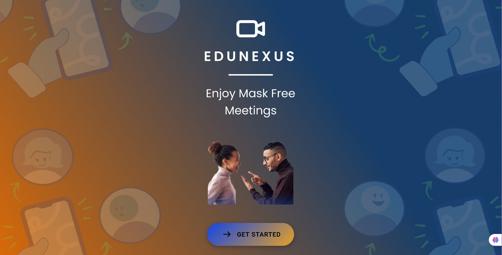
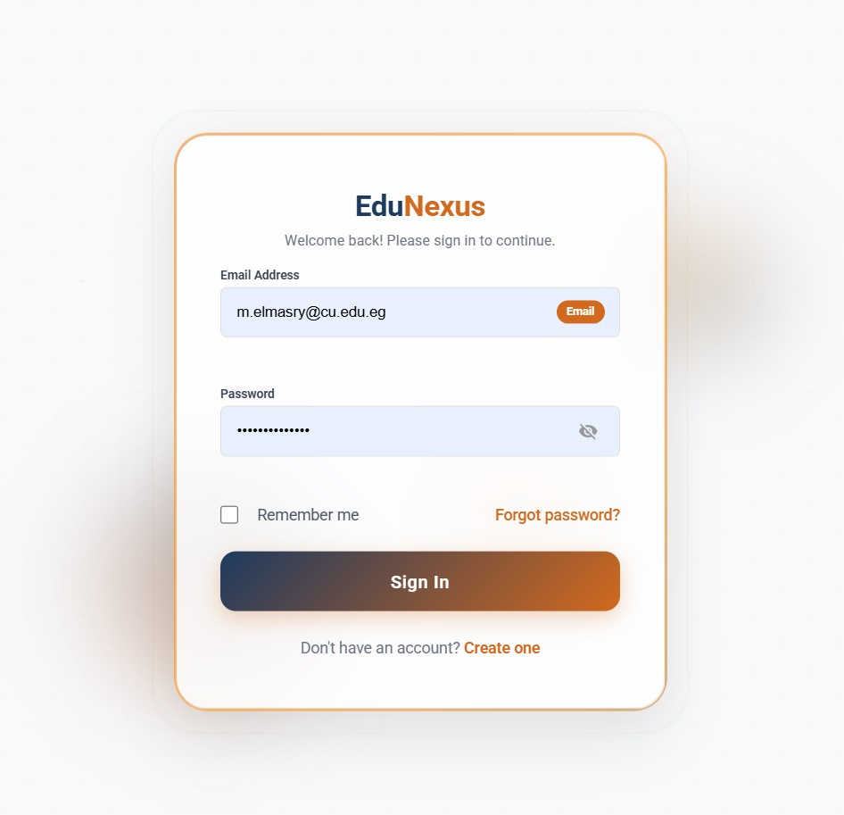
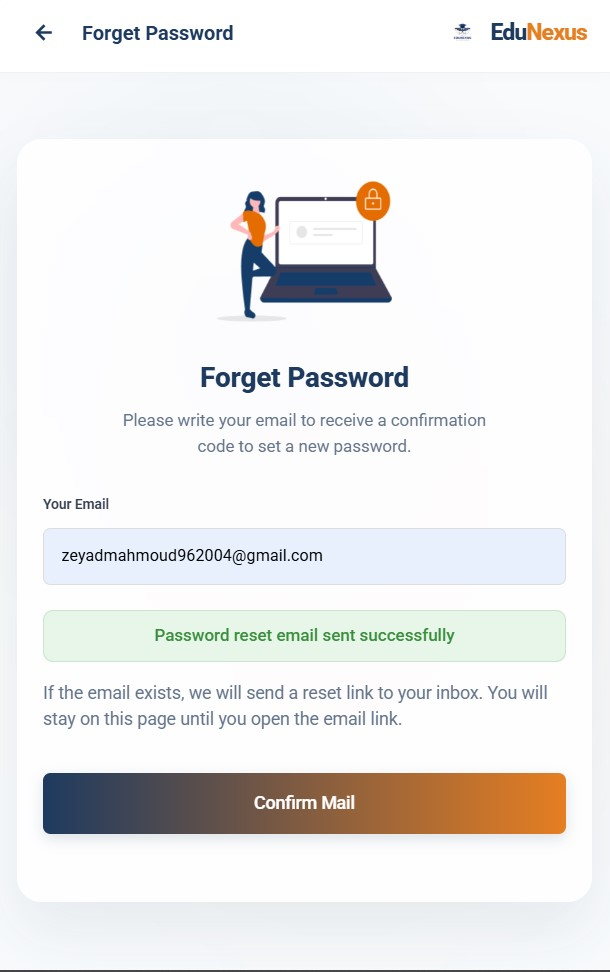
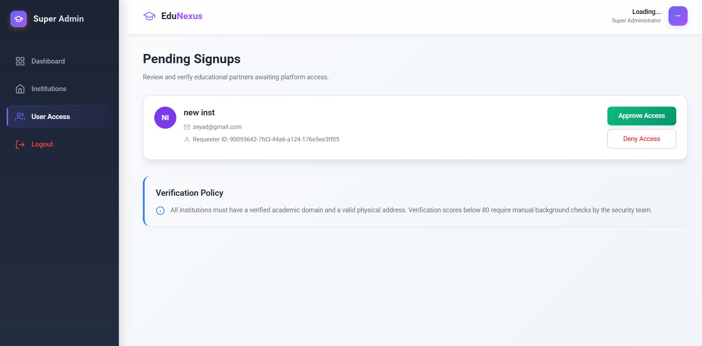
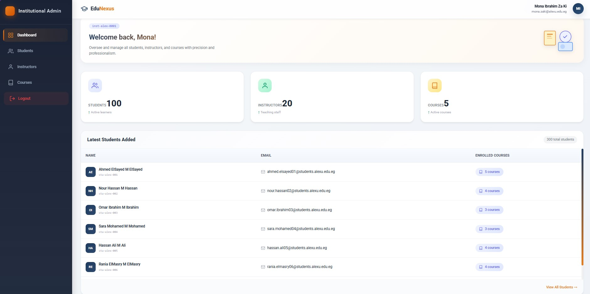
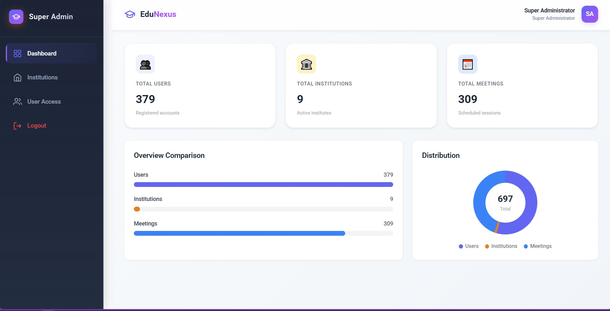
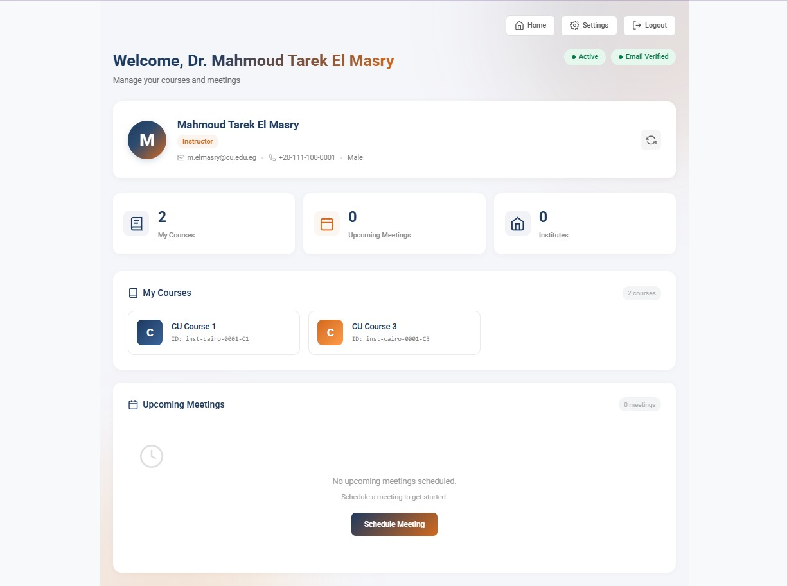
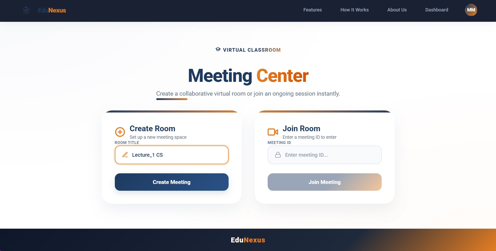
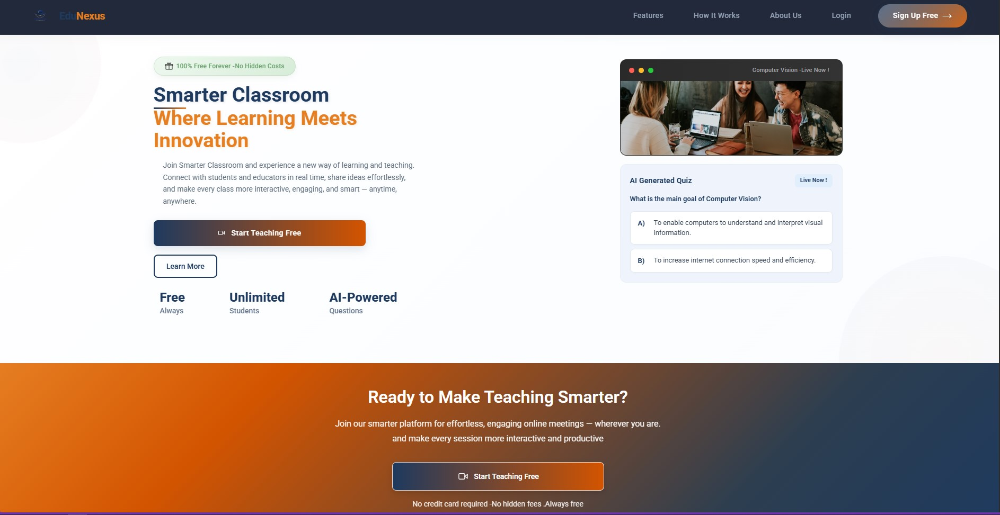
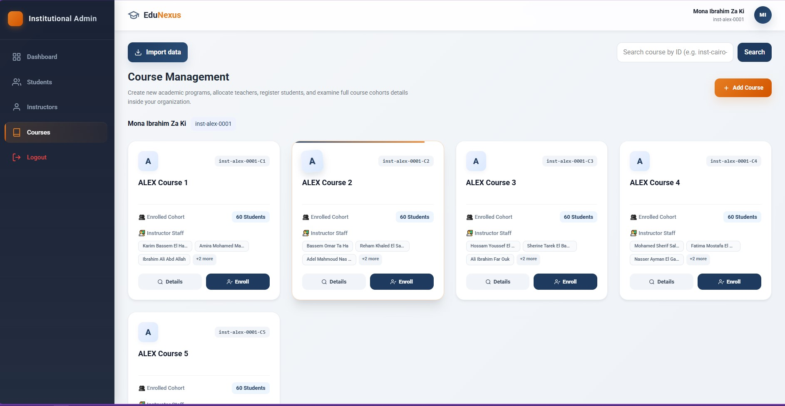
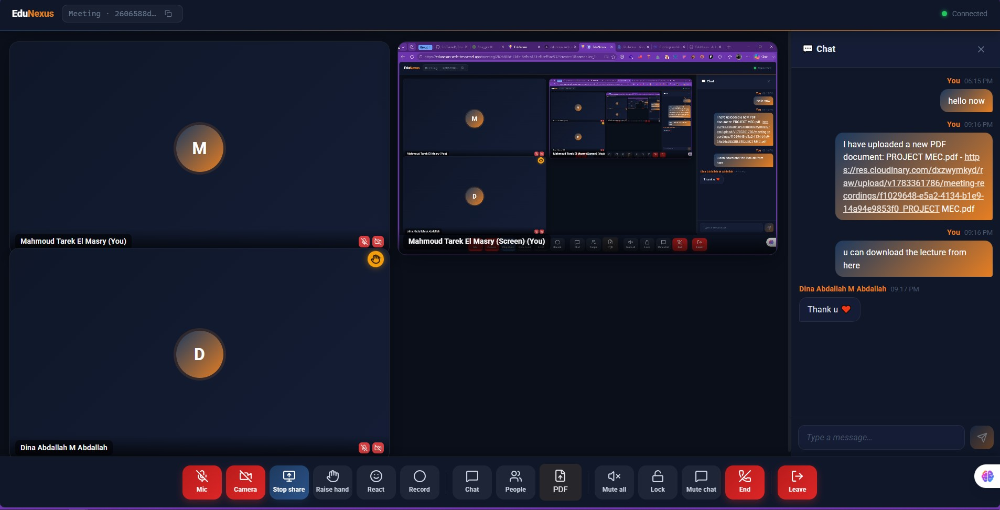
Instantaneous GPT-4o auto-generated assessments pushed directly via SignalR to test comprehension.
An intrusive popup generated instantly during the lecture, displaying the question text and 4 distinct radio options (A, B, C, D).
A strict 30s countdown timer and a question progress counter (e.g., "3 of 5"). Expiration counts as an incorrect answer.
The student must select an answer and hit the "Submit Answer" button before the countdown timer expires.
Post-submission shows a Green checkmark (Correct) or Red X (Incorrect), while the result is piped directly into Engagement Analytics.
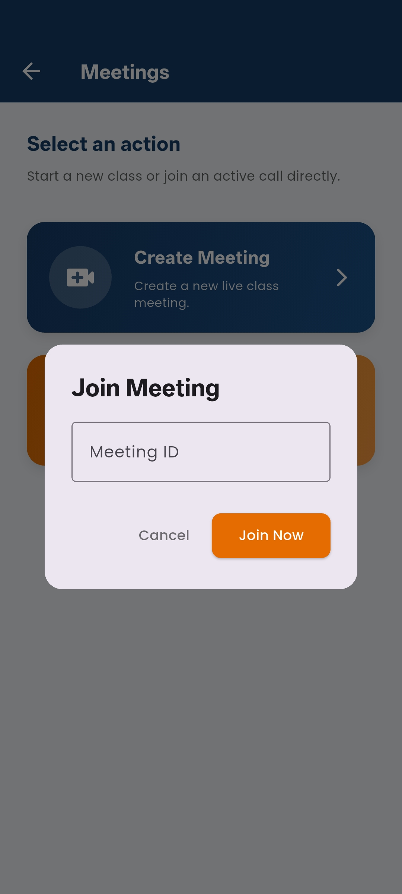
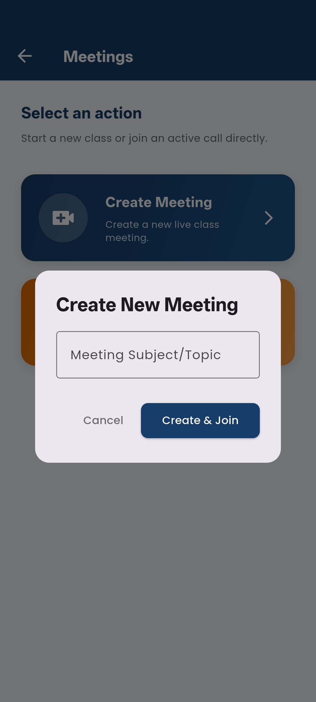
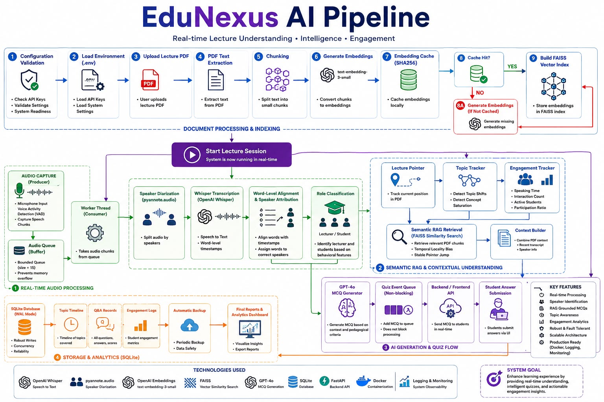
pyannote.audio.From scheduling to AI-powered engagement analysis
Bug resolution timeline: Discovered 11 bugs → All resolved before final release.
| Level | Count | Passed | Coverage |
|---|---|---|---|
| Backend Unit | 245 | 241 | 96% |
| Frontend Unit | 189 | 185 | 94% |
| Integration | 56 | 54 | — |
| E2E | 32 | 30 | — |
| Performance | 12 | 11 | k6 load |
Target: <500ms
Target: <30s
Whisper-1 accuracy vs GT
Speaker segment accuracy
Uptime during testing period
Zero high or critical vulnerabilities detected.
Solution: Implemented advanced audio chunking, request queuing, and Polly retry policies with exponential backoff to handle rate limits gracefully.
Solution: Configured dedicated STUN/TURN servers and spent 3 weeks perfecting ICE candidate negotiation to guarantee connectivity across restricted university networks.
Solution: Designed a buffered audio pipeline equipped with RMS silence detection to naturally trigger MCQs during pauses, rather than interrupting active speech.
Solution: Leveraged Redux Toolkit (Web) and Provider (Flutter) with identical data shape definitions to ensure 100% consistent behavior across devices.
EduNexus is already containerized with Docker Compose, utilizing CI/CD pipelines via GitHub Actions for zero-downtime deployment.
We welcome your questions.
Dr. Mohammed Kayed | Eng. Ehab Ebrahim